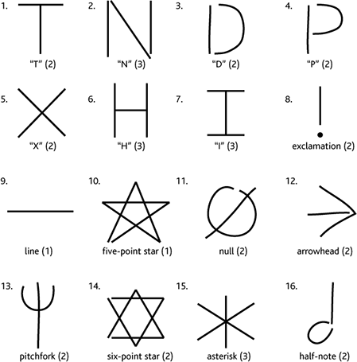

The <canvas> element is not supported by this browser.
recognize
clear
add gesture as points
Use Golden Section Search
(original)
Use Protractor
(faster)
Use bounded rotation invariance (±45°)
Require same no. of component strokes
Add as example of existing type:
T
N
D
P
X
H
I
exclamation
line
five-point star
null
arrowhead
pitchfork
six-point star
asterisk
half-note
Add as example of custom type:
Delete all user-defined gestures:
